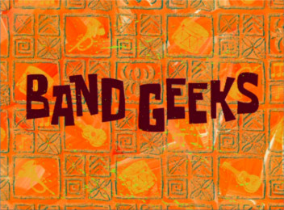

Band Geeks Episode opinion
July 30,2018

Review
This is probably the most overrated pre-movie episode. The starting with everyone signing up is pretty boring. The middle with everyone training is the reason I didn't rate this any lower, as it's kinda entertaining and there are a couple of jokes (though not absolutely hilarious). One problem I do have with the middle is that EVERYONE is a jerk for no reason. Like seriously, everyone starting fighting because Harold insulted Krabs for having big meaty claws? Why is everyone acting like jerks? Anyways, the ending is also very forced. How did SpongeBob and his crew be able to train from awful musicians to masters in just a few days? If we saw a montage of that, I could've forgive that they were able to do that, but since they don't, it just feels forced for them to be able to sing Sweet Victory in just a few days. It takes quite some time to be a master musician, and even longer to train an entire group. For the song, honestly, since it's not SpongeBob original, I didn't really care for it. I did however like that Squidward did win, though ending the episode with Squidward in the air being happy isn't exactly the best ending. Anyways, while this episode isn't bad, it has problems, though it has perks. This is your average Season 2 episode, and there's nothing different between this and other Season 2 episodes.